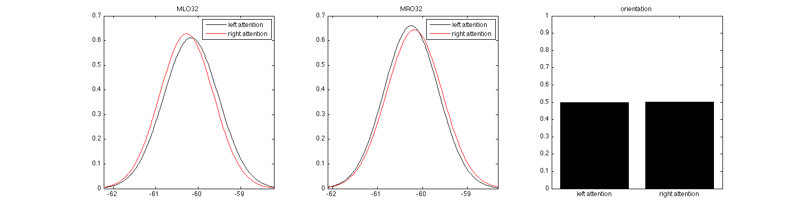

Using Bayesian networks together with FieldTrip data
This example demonstrates how to use neuroimaging data obtained from FieldTrip together with the neurogm toolbox. In the example, we make use of covert attention data of one subject that has already been frequency analyzed. Note that this is trial based data so we can build finite size models that capture behaviour within a trial.
The data consists of 7 different frequencies at 274 channels at time points [-0.5 0 0.5 1 1.5 2 2.5]. We can expect evoked response after the cue and alpha modulation after about 1 second
In this particular example, we will construct a standard Bayesian network and demonstrate its use.
Copyright (C) 2008 Marcel van Gerven
Contents
Compare log likelihood of a Bayesian network before/after learning
function fieldtrip_bn_demo()
Load frequency data and convert the data to a format that can be used. A Bayesian network is a static model, so we will take out the time data and focus only on the 12 Hz band in two channels in left and right hemisphere.
load covattfrq1; % left and right channels l = find(ismember(left.label,'MLO32')); r = find(ismember(left.label,'MRO32')); % We take the log to make the data better behaved left = log((squeeze(nan_mean(left.powspctrm(:,[l r],3,:),4)))); right = log((squeeze(nan_mean(right.powspctrm(:,[l r],3,:),4))));
Now we can create a very simple model that consists of one discrete parent (the attention condition) and two continuous children
data = [[left ones(size(left,1),1)]; [right 2*ones(size(right,1),1)]]; clear left; clear right;
Create the random variables; they should follow the data ordering
factors = cell(1,3);
factors{1} = gaussian_cpd(1,[],3,[0; 0],{[]; []},[1; 1]);
factors{2} = gaussian_cpd(2,[],3,[0; 0],{[]; []},[1; 1]);
factors{3} = multinomial_cpd(3,[],[0.5; 0.5]);
% optionally add names to the factors
factors{1}.name = 'MLO32';
factors{2}.name = 'MRO32';
factors{3}.name = 'orientation';
factors{3}.statenames = {'left attention' 'right attention'};
Create simple bayes net
bn = bayesnet(factors);
Write graph structure to .ps file (requires installation of GraphViz library)
bn.write('tmpbn','dot','extension','ps');
/bin/bash: dot: command not found
This is what the plot would look like

Log likelihood of this model is pretty low since we did not train parameters
bn.loglik(data)
ans = -3.6291e+03
Learn parameters from complete data
bn = bn.learn_parameters(data);
Log likelihood has increased
bn.loglik(data)
ans = -2.6150
Plot the estimated prior distributions with continuous ones of the form

subplot(1,3,1);
bn.factors{1}.plot();
legend('left attention','right attention');
subplot(1,3,2);
bn.factors{2}.plot();
legend('left attention','right attention');
subplot(1,3,3);
bn.factors{3}.plot();
set(gcf,'Position',[100 100 1500 400]);
 Create an inference engine
ie = canonical_jtree_ie(bn);
triangulating model constructing potentials constructing junction tree computing messages
Add some evidence
ie.enter_evidence([nan -59.5 nan]);
Compute marginals
m1 = normalize(ie.marginalize(1)); m3 = normalize(ie.marginalize(3));
Plot the marginals after evidence propagation
figure subplot(1,2,1); m1.plot(); subplot(1,2,2); m3.plot();